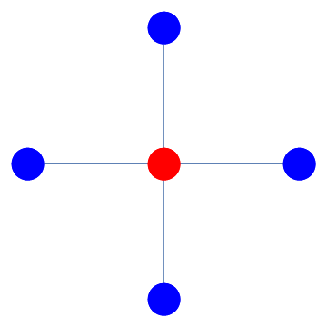

7. More problems¶
7.1. Axially symmetric heat flow¶
The image below shows a cross-section of pipe insulation, which is subjected to temperatures \(\phi=500K\) on the inner boundary and \(\phi=300K\) on the outer boundary. The radial and axial directions are denoted by \(r,\theta\), respectively.

Due to axial symmetry of the problem, the governing two-dimensional heat equation \(\nabla^2\phi=0\) for this problem can be reduced to
Exercise 7.1
Express equation (7.1) in finite difference form, using a central difference scheme, and apply a Gauss-Seidel relaxation technique with 11 radial points to determine the solution \(\phi(r)\) for \(r\in[0.05,0.10]\) to within \(10^{-4}\).
Graphically compare your answer to the analytic solution, which is given by
Solution The equation can be written out using the central differences formula as:
which rearranges to
This can be applied as follows
n=11; % We are using 11 points
r = linspace(0.05,0.10,n); h =r(2)-r(1); % Construct the radial coordinate
%Set up the initial grid :
F = 400*ones(1,n); % The temperature average is a suitable choice
F(1)=500;F(end)=300; % Enforce boundary conditions
for j = 1:200 %Limit to 200 iterations
Fcheck = F; %To check for convergence
for k=2:n-1 %On interior points
F(k) = ((r(k)-h/2)*F(k-1)+(r(k)+h/2)*F(k+1))/2/r(k);
end
if norm(Fcheck-F)<10^-4
fprintf('Converged after %d iterations,',j)
break
end
end
In this case we are able to compare to the analytic solution obtained by integrating the ODE by hand:
figure
subplot(1,2,1);plot(r,F);
title('estimated solution');xlabel('x');xlim([0.05,0.1]);
a=-200/log(2); b=500-200*log(20)/log(2);
Fanalytic= a*log(r)+b;
subplot(1,2,2);plot(r,abs(F-Fanalytic))
title('error');xlabel('x');xlim([0.05,0.1]);
7.2. 1D diffusion¶
Enceladus is a small, icy moon of Saturn, which has been observed to emit molecules of water from “cracks” in its surface. The following differential equation represents the competition between outward diffusion of water molecules from the surface and destruction due to ionization:
In this equation, \(r\) is the radial distance from the centre of the moon, \(c\) is the steady state concentration of water molecules, and \(\beta_{LOSS}\) represents the relative importance of ionization compared to diffusion. We will take
Write down a discretised form of these equations, using a central difference scheme.
Solve the discretised system with 50 grid points simultaneously using a matrix method.
Solve the discretised system with 50 grid points using a Gauss-Seidel technique. Determine the number of iterations required for agreement with your part (2) solution to within \(10^{-4}\).
Solution
Part 1: Discretisation
We can also eliminate a factor of \(\frac{r_i}{\Delta r^2}\) to give:
Part 2: Matrix method
Grouping together terms gives (for example):
n=50; bloss=0.01; % Values defined in the question
r=linspace(1,50,n); % Set up the radial coordinate
hr=r(2)-r(1); % Determine the grid spacing
M = zeros(n,n); % Construct the grid
% CONSTRUCTION OF COEFFICIENTS FOR INTERIOR NODES
for k=2:n-1
M(k,k-1)=(r(k)-hr);
M(k,k)=-(2*r(k)+bloss*hr^2*r(k));
M(k,k+1)=(r(k)+hr);
end
% alternative approach using diag:
% rint = r(2:n-1);
% diag(rint-hr,-1)+diag([1,-2+bloss*hr^2*rint,1]) + diag(rint+hr,1)
% CONSTRUCTION OF COEFFICIENTS FOR BOUNDARY NODES
M(1,1)=1; M(end,end)=1;
% CONSTRUCTION OF RHS
b=zeros(n,1);b(1)=1;b(n)=0.1; % interior + boundary
sol1=(M\b).';
Part 3: Gauss-Seidel method
% Set up an initial grid for the solution
c=zeros(1,n); c(1) = 1; c(end)=0.1;
for j=1:1000 %bound on maximum number of iterations
for k=2:n-1
c(k) = ((r(k)+hr)*c(k+1) +(r(k)-hr)*c(k-1))/(2*r(k)+bloss*hr^2*r(k));
end
if norm(c-sol1)<1e-4
fprintf('Converged after %d iterations,',j)
break
end
end
% Plots
figure
subplot(2,1,1)
plot(r,sol1,'b')
title('Solution by Matrix method')
subplot(2,1,2)
plot(r,c,'r')
title('Solution by Gauss-Seidel method')
7.3. 1D wave equation with Cauchy conditions¶
In this example we will solve the problem
Subject to the following initial conditions:
and the following boundary conditions:
7.3.1. Solution¶
We will define the following solution grid
Application of a central differences formulae for the derivatives then gives
where a superscript has been used to denote the temporal discretisation and a subscript has been used to denote the temporal discretisation. This formula uses the result at two previous time steps. The given Dirichlet-type conditions for the spatial boundary can be applied by forced modification of the boundary nodes, \(u^{n}_0=u^{n}_{N_x}=0\), \(n\in[0,\dots N_t]\).
The initial conditions allow a forward-stepping algorithm to be used. The starting value for \(u^1_i \) is given by combining the initial condition for the derivative with the ODE formula, which gives
Summary of steps:
Compute \(u^0_{i}\) for \(i\in[0,\dots N_x]\) from the given initial condition
Compute \(u^1_{i}\) from (interior), applying BCs \(u^{1}_0=u^{1}_{N_x}\)
Compute \(u^{n+1}_{i}\) from (tstep) for \(n=[0,\dots N_t-1]\), applying BCs \(u^{n}_0=u^{n}_{N_x}\) in each step
Solve the problem for the case where \(L=4\pi\), \(T=20\), \(c=4\), and plot \(u(t,x)\).
Solution
Discretise temporal and spatial variables:
clear;
c = 4; L = 4*pi; T = 20; % given parameters
x = linspace(0,L); % discretisation of spatial dimension
Dx= x(2)-x(1); % spatial step size
r=0.95; Dt=r*Dx/c; %temporal step size via Courant parameter r
% Note: Dt, Dx are arbitrary, but keep r=c*Dt/Dx < 1 for stability.
% Try r=1.01 to see what happens when this condition is violated.
t = 0:Dt:T; %discretisation of temporal dimension
Nx=numel(x); Nt=numel(t);
Set up a grid to record \(u(t_n,x_i)\)
u = zeros(Nt,Nx); %solution grid
ii=2:Nx-1; %interior x indices
%--------------------------------------------------------------
% FILL IN INITIAL CONDITIONS
u(1,:) = 2*exp(-(x-L/2).^2); %u(0,x)
%For a standing wave solution try instead (where k is an integer)
%k=1; u(1,:)=sin(2*pi*k*x/L);
u(2,ii) = u(1,ii)-r^2/2*(u(1,ii+1)-2*u(1,ii)+u(1,ii-1)); %u(Dt,x)
%--------------------------------------------------------------
% APPLY UPDATE RULES
for n = 3:Nt
neigh=u(n-1,ii+1)-2*u(n-1,ii)+u(n-1,ii-1);
u(n,ii)=-u(n-2,ii)+2*u(n-1,ii)+r^2*neigh;
end
%--------------------------------------------------------------
A surface plot of the solution shows that
the initial disturbance propagates away from the origin in both directions
disturbances are reflected at both boundaries and travel back along the mirror path
[X,T]=meshgrid(x,t);
figure
surfc(T,X,u,'LineStyle','none')
xlabel('t');ylabel('x')
We can also produce a time animation of the behaviour
%figure;s=round(0.1/Dt);N=8/Dt;
%for n = 1:s:N
% cla; plot(x,u(n,:)); axis([0,L,-2,2]); drawnow;
% pause(0.1);
%end
7.4. Damped 1D wave equation¶
The one-dimensional damped wave equation is given by
By using the central difference formulas the equation of motion can be written in the following discretised form:
where \(r=\frac{c\Delta t}{\Delta x}\) and \(\phi_{i,j}=\phi(t_i,x_j)\). We will take \(c=0.2\), \(\gamma=-0.5\).
Step 1: Employ a suitable discretisation based on the time iteration formula (7.3) to solve the damped wave equation for \(t\in[0,4]\), \(x\in[0,2]\) subject to
Due to the periodicity of the disturbance, the end-conditions on the spatial grid can be taken such that the solution “wraps around”, i.e.
You may find the circshift function useful in constructing your answer.
Step 2: Produce a surface plot of your solution for \(\phi(x,t)\) and label the axes.
Step 3: To illustrate the amplitude evolution of the disturbance, produce a plot of
Step 4: Use your surface plot and amplitude evolution plot to comment on the behaviour of the disturbance.
Step 5: Describe how the accuracy and convergence/stability of the solution depend on \(\Delta t\), \(\Delta x\) and the Courant parameter \(r\).
Solution
clear;
c = 0.2; g=0.5; L = 2; T = 4; % given parameters
Nt=81; Nx=200;
x = linspace(0,L,Nx); % discretisation of spatial dimension
t = linspace(0,T,Nt); % discretisation of spatial parameter
Dt=T/(Nt-1); Dx=L/(Nx-1);
r=c*Dt/Dx % ensure it's less than 1
F=zeros(Nt,Nx);
F(1,:)=sin(2*pi*x); %phi(0,x)
F(2,:) = sin(2*pi*(x-c*Dt)); %phi(Dt,x) - see comment at end
%w=sqrt(c^2*(2*pi)^2-g^2/4);
%cp=w/2/pi;
%F(2,:)=exp(-g/2*Dt)*sin(2*pi*(x-cp*Dt));
K0=(1-g*Dt/2); K2=(1+g*Dt/2); %constants appearing in update rule
for i=2:Nt-1
f=F(i,:);
neigh=circshift(f,1)-2*f+circshift(f,-1);
F(i+1,:)=(2*f+r^2*neigh-K0*F(i-1,:))/K2;
end
surf(x,t(1:5:end),F(1:5:end,:),'EdgeColor','none')
xlabel('x');ylabel('t');zlabel('\phi')
plot(t,max(F,[],2)/max(F(1,:)))
xlabel('t');ylabel('\phi_{max}');
The solution becomes more accurate as the size of the spatial and temporal steps reduces, but needs very small steps to achieve a smooth solution profile. The stability is sensitive to the Courant parameter . For \(r<1\) the solution converges, whilst for \(r>1\) it does not. You can explore this behaviour by comparing the solutions for nt= 80, 81 for nx=200.
Concerning the given result for : \(\phi(\Delta t,x)\) The given result came from the analytic solution for the undamped case (when \(\gamma=0\)). Whoever wrote this question must have believed it would give a good approximation to the analytic solution for the undamped case. However, the result given by using this condition is unphysical. Our numeric solution rightly shows a travelling wave of decaying amplitude, but the staggered rate of decay doesn’t match reality.
Hand derivations indicate that the PDE admit particular solutions of the form \(\phi=e^{-\frac{\gamma}{2}t}\sin(kx-\omega t)\), where \(\omega^2=k^2c^2 -\left(\frac{\gamma}{2}\right)^2\). If this analytic result is used to determine \(\phi(\Delta t,x)\), the amplitude will be seen to decay exponentially with rate determined by the strength of the damping. This finding highlights again the importance of taking great care with the accurate implementation of any boundary conditions.
What if we can’t use an analytic solution to determine \(\phi(\Delta t,x)\)? In that case, we could determine the result from a pair of initial conditions of the form \(\phi(0,x)=f(x)\), \(\phi_t(0,x)=g(x)\), by using the central difference formula for the first derivative boundary condition, in conjunction with the update rule given by the PDE. This is the method used in the previous question for the undamped case. The functions \(f(x)\) and \(g(x)\) would need to be informed by the physical problem. The solution would (likely) not be a single travelling harmonic, but would consist of a wavepacket (sum of) harmonics.
7.5. 2D heat equation with Dirichlet conditions¶
We will consider the problem
By applying the second derivative central difference formula at the interior points:
we obtain
This is known as the five-point formula. It can be represented using a stencil:

{kind=link}
The equation rearranges to the following iterative formula:
Step 1: Solve the problem using an iterative solution technique, for the case where:
subject to the conditions
Step 2: Compare your solution to the analytic result, which is given by
Step 3: Solve the problem using an iterative solution technique, for the case where:
subject to the conditions
Hint: to enforce the Neumann boundary conditions, you can use the first order central differences approximation
The expressions to enforce these conditions at the boundary are given in terms of the result at nodes outside the boundaries. We can construct the required ``fictitious’’ nodes and remove them from out solution at the end.
Part 1:
clear
% This is the RHS of the equation
f=@(x,y)(2-pi^2*(1+x).^2).*cos(pi*y);
% set up the grid
n=30;
x = linspace(0,1,n); y = linspace(0,1,n);
% Useful to store f(x,y) in an array and use F(i,j) instead of f(x(i),y(k))
[X,Y]=meshgrid(x.',y.'); F=f(X,Y);
% determine grid size
h =x(2)-x(1);
% to hold the solutions
U = zeros(n,n);
% enforce boundary conditions
U(1,:) = (1+x).^2; U(end,:)=-(1+x).^2;
U(:,1) = cos(pi*y); U(:,end)=4*cos(pi*y);
%relaxation parameter is r=1 for Gauss-Seidel.
% You could try some higher values for relaxation.
r=1;
[n,m] = size(U);
for k = 1:300 %for each sweep
for i = 2:n-1
for j = 2:m-1
Unew = (U(i-1,j)+U(i+1,j)+U(i,j-1)+U(i,j+1))/4-h^2/4*F(i,j);
U(i,j) = U(i,j)+r*(Unew-U(i,j));
end
end
end
% compare to analytic results
T = (1+X).^2.*cos(pi*Y);
figure
subplot(1,2,1)
surf(x,y,T);title('Exact')
subplot(1,2,2)
surf(x,y,abs(U-T));title('Gauss-Seidel error')
Part 2:
% This is the RHS of the equation
f=@(x,y)(-5*sin(3*pi*x).*cos(2*pi*y));
% set up the grid
n=30;
x = linspace(0,1,n); y = linspace(0,1,n);
[X,Y]=meshgrid(x,y);
F=f(X,Y);
% determine grid size
h =x(2)-x(1);
% the solution grid is padded with fictitious nodes to remove at the end
U = zeros(n+2,n+2);
% we need to pad F as well, so that the two grids are not mismatched
F=padarray(F,[1,1]);
r=1;%relaxation parameter is 1 for Gauss-Seidel
[n,m] = size(U);
for k = 1:500 %for each sweep
%enforce boundary conditions on fictitious nodes
U(1,:)=U(3,:); U(n,:)=U(n-2,:);
U(:,1)=U(:,3); U(:,m)=U(:,m-2);
for i = 2:n-1
for j = 2:m-1
Unew = (U(i-1,j)+U(i+1,j)+U(i,j-1)+U(i,j+1))/4-h^2/4*F(i,j);
U(i,j) = U(i,j)+r*(Unew-U(i,j));
end
end
end
figure
surf(x,y,U(2:end-1,2:end-1));
Note: If \(\phi_{sol}\) is a solution of this problem, which satisfies the boundary conditions, then \(\phi_{sol}+C\) is also a solution. Hence, it is possible for the surface to appear shifted up or down in your answers.
Alternatively, using a simultaneous equations technique
The function cdiffM below was written to solve the Poisson problem
using a matrix method for any possible combination of boundary conditions. The function sets up the coefficient matrix for the problem \(A\Phi=F\), where \(F,Phi\) are the function value and unknown solution at each grid node \((x,y)\), arranged as vectors. Array \(A\) is the (sparse) coefficient matrix that relates each node to its neighbours using the five-point formula. The boundary equations are modified to use any specified boundary conditions.
%% Question 1
% set up the grid
n=30;
x = linspace(0,1,n); y = linspace(0,1,n); [X,Y]=meshgrid(x,y);
%determine grid size
h =x(2)-x(1);
% RHS with enforced boundary conditions
F = h^2*(2-pi^2*(1+X).^2).*cos(pi*Y);
F(1,:) = (1+x).^2; F(end,:) =-(1+x).^2;
F(:,1) = cos(pi*y); F(:,end) =4*cos(pi*y);
F = F(:); % convert to a list
% LHS with enforced boundary conditions
U = cdiffM(n,{'dirichlet','dirichlet','dirichlet','dirichlet'},F);
% compare to analytic results
U_exact = (1+X).^2.*cos(pi*Y);
figure; surf(x,y,U);
%% Question 2
n=30;
x = linspace(0,1,n).'; y = linspace(0,1,n).'; [X,Y]=meshgrid(x,y);
%determine grid size
h =x(2)-x(1);
% RHS with enforced boundary conditions
F = h^2*(-5*sin(3*pi*X).*cos(2*pi*Y));
F = padarray(F,[1,1],0);
F = F(:); % convert to a list
% LHS with enforced boundary conditions
U = cdiffM(n,{'neumann','neumann','neumann','neumann'},F);
figure; surf(x,y,U);
function U = cdiffM(n,LRUD,F)
% Construct the coefficient matrix for (nxn) implementation of central
% difference formula, with dirichlet or neumann boundary conditions, and
% solve for given forcing
%
% INPUTS
% n : dimensions of grid
% LRUD : cell array of left, right, up, down boundary types
% (e.g. {'neumann','neumann','neumann','neumann'}
% F : RHS of equation
%
% OUTPUTS
% U : solutions
m = n;
% Introduce fictitious nodes at any neumann boundaries
if strcmpi(LRUD{1},'neumann'), m=m+1; end
if strcmpi(LRUD{2},'neumann'), m=m+1; end
if strcmpi(LRUD{3},'neumann'), n=n+1; end
if strcmpi(LRUD{4},'neumann'), n=n+1; end
nodes = reshape(1:n*m,n,m); % number the nodes in our (n x m) domain
i = 2:n-1; j = 2:m-1; % location of interior nodes
% nodes and neighbours in five-point formula
C = nodes(i,j);
L = nodes(i,j-1); R = nodes(i,j+1);
U = nodes(i-1,j); D = nodes(i+1,j);
% order the five-point indices as a list
idx = [D(:), L(:), C(:), R(:), U(:)];
% construct the array by looping over the rows
M = zeros(n*m); for k=1:numel(C), M(C(k),idx(k,:)) = [1 1 -4 1 1]; end
%% apply boundary conditions
% left boundary
if strcmpi(LRUD{1},'neumann')
M = neumann(M,nodes(:,1:3),[-1,1]);
else
M = dirichlet(M,nodes(:,1));
end
% right boundary
if strcmpi(LRUD{2},'neumann')
M = neumann(M,fliplr(nodes(:,end-2:end)),[1,-1]);
else
M = dirichlet(M,fliplr(nodes(:,end)));
end
% upper boundary
if strcmpi(LRUD{3},'neumann')
M = neumann(M,nodes(1:3,:).',[-1,1]);
else
M = dirichlet(M,nodes(1,:).');
end
% lower boundary
if strcmpi(LRUD{4},'neumann')
M = neumann(M,fliplr(nodes(end-2:end,:).'),[1,-1]);
else
M = dirichlet(M,nodes(end,:).');
end
%% solve the system
U = reshape(M\F,n,m);
% cut off any fictitious nodes that were introduced
if strcmpi(LRUD{1},'neumann'),U(:,1)=[];end
if strcmpi(LRUD{2},'neumann'),U(:,end)=[];end
if strcmpi(LRUD{3},'neumann'),U(1,:)=[];end
if strcmpi(LRUD{4},'neumann'),U(end,:)=[];end
end
function M = dirichlet(M,C)
% Apply dirirchlet boundary conditions at nodes numbered in vector C
for k = 1:numel(C), M(C(k),C(k)) = 1; end
end
function M = neumann(M,idx,coeffs)
% Apply neumann boundary conditions at nodes idx = [L C R] or [U C D].
for k = 1:size(idx,1), M(idx(k,1),[idx(k,1),idx(k,3)]) = coeffs; end
end